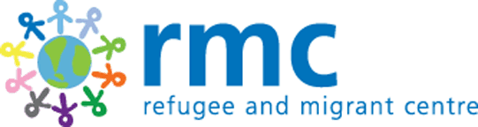

Restore, a project of Birmingham Churches Together, aims to welcome, include and assist integration of refugees and those seeking sanctuary from persecution. Restore works to achieve this through befriending, social activities, equipping refugees for work, advocacy, and awareness-raising. They are always looking for new befrienders and campaigners!
W: http://www.restore-uk.org/get-involved/
T: 0121 661 4275
The Refugee and Migrant Centre (RMC) is an award winning charity founded in 1999, which aims to assist refugees and migrants through crisis and disadvantage, by removing barriers to their integration and enabling them to become equal citizens. They look for a broad range of volunteers, including mentors, interpreters, advisors and administrators for various projects.
W: https://rmcentre.org.uk/volunteer/
T: 01902 311554
E: info@rmcentre.org.uk
Refugee Action's main work involves resettling refugees in their new environment with practical support, guidance and advice on the asylum process and how to access support. You can get directly invloved with those in need of help by welcoming new arrivals, acting as an interpreter, teaching English and employability skills, or just generally supporting them.
W: https://www.refugee-action.org.uk/support-us/volunteers/
T: 0121 201 3070
E: info@refugee-action.org.uk